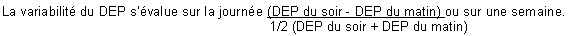

RÉSUMÉ DES CARACTÉRISTIQUES DU PRODUIT
ANSM - Mis à jour le : 22/02/2013
BUDESONIDE ARROW 0,5 mg/2 ml, suspension pour inhalation par nébuliseur en récipient unidose
2. COMPOSITION QUALITATIVE ET QUANTITATIVE
Budésonide .................................................................................................................................... 0,50 mg
Pour un récipient unidose de 2 ml.
Pour la liste complète des excipients, voir rubrique 6.1.
Suspension pour inhalation par nébuliseur.
4.1. Indications thérapeutiques
Traitement continu anti-inflammatoire de l'asthme persistant sévère* de l'enfant.
*L'asthme persistant sévère se définit par l'existence de symptômes permanents, de crises fréquentes, de symptômes d'asthme nocturne fréquents, une activité physique limitée par les symptômes d'asthme, un DEP ou un VEMS inférieur à 60% des valeurs prédites, une variabilité du DEP* supérieure à 30%.

NB: l'administration de budésonide à l'aide d'un nébuliseur (appareil pour nébulisation) doit être réservé à l'enfant et en particulier au nourrisson en cas d'inaptitude à utiliser les autres modes d'administration tels que le Turbuhaler ou le flacon pressurisé avec chambre d'inhalation et masque adapté.
4.2. Posologie et mode d'administration
Posologie
La dose initiale sera déterminée selon la sévérité de la maladie avant traitement et sera ensuite ajustée en fonction des résultats individuels. Il convient de toujours rechercher la posologie minimale efficace.
Chez l'enfant, la posologie recommandée est de 0,5 mg à 2 mg par jour répartis en 2 séances d'aérosolthérapie par jour.
Après plusieurs jours (ou semaines) de ce traitement lorsque l'état clinique est amélioré, que les symptômes ont régressé et que l'asthme est contrôlé, la posologie minimale efficace devra être recherchée. Dans ce but, la dose quotidienne pourra être administrée en une séance d'aérosolthérapie par jour, si ce rythme d'administration favorise la compliance au traitement.
En cas de déstabilisation de l'asthme, la dose et le nombre de prises devront être ré augmentés.
Une dose unitaire entamée doit être utilisée immédiatement.
Mode d'administration
Cette suspension de budésonide doit être administrée par voie inhalée à l'aide d'un appareil pour nébulisation (nébuliseur) à air comprimé (ou pneumatique). Les générateurs ultrasoniques ne sont pas recommandés car ils peuvent ne pas être adaptés pour une administration correcte de ce médicament.
NE PAS INJECTER- NE PAS AVALER.
Se conformer au mode d'emploi de l'appareil utilisé.
Un volume de remplissage de 2 à 4 ml convient pour la plupart des nébuliseurs. La suspension est prête à l'emploi. Si une dilution est nécessaire elle se fera dans du sérum physiologique stérile.
Le mélange obtenu est pulsé par un débit d'air ou d'oxygène (6 à 8 litres/minutes) pendant environ 10 à 15 minutes durant lesquelles le patient respire à son rythme habituel.
La technique d'utilisation par le patient doit être vérifiée régulièrement.
Après inhalation, la suspension inutilisée restant dans la cuve de l'appareil doit être jetée.
Se rincer la bouche après inhalation du produit.
Sans objet.
4.4. Mises en garde spéciales et précautions d'emploi
Prévenir le patient que ce médicament n'est pas destiné à juguler une crise d'asthme déclarée, mais est un traitement continu de fond de la maladie asthmatique devant être poursuivi régulièrement, quotidiennement et aux doses prescrites, et dont les effets sur les symptômes de l'asthme ne se feront sentir qu'au bout de quelques jours à quelques semaines.
Si en dépit d'un traitement bien conduit une dyspnée paroxystique survient, on doit avoir recours à un bronchodilatateur bêta2 mimétique par voie inhalée d'action rapide et de courte durée pour traiter les symptômes aigus. Il conviendra d'en informer le patient et de lui préciser qu'une consultation médicale immédiate est nécessaire si, dans ce cas, le soulagement habituellement obtenu n'est pas rapidement observé après inhalation du bronchodilatateur bêta2 mimétique.
Si un patient développe en quelques jours une augmentation rapide de sa consommation en bronchodilatateurs bêta2 mimétiques d'action rapide et de courte durée par voie inhalée, on doit craindre (surtout si les valeurs du débit-mètre de pointe s'abaissent et/ou deviennent irrégulières) une décompensation de sa maladie et la possibilité d'une évolution vers un asthme aigu grave (état de mal asthmatique).
Le médecin devra également prévenir le patient de la nécessité dans ce cas, d'une consultation immédiate. La conduite thérapeutique devra alors être réévaluée.
Le patient doit être averti que l'amélioration de son état clinique ne doit pas conduire à une modification de son traitement, en particulier à l'arrêt de la corticothérapie par voie inhalée, sans avis médical.
Dans l'asthme persistant léger de l'enfant, en l'absence de données définitives sur les conséquences sur la croissance et le métabolisme osseux de l'administration de corticoïde par voie inhalée, il est souhaitable de débuter un traitement continu de fond par une cromone avant de passer, en cas d'échec, à un traitement corticoïde inhalé.
L'attention des sportifs sera attirée sur le fait que cette spécialité contient un principe actif pouvant induire une réaction positive des tests pratiqués lors des contrôles antidopage.
Précautions d'emploi
En cas d'infection bronchique ou de bronchorrhée abondante, un traitement approprié est nécessaire afin de favoriser la diffusion optimale du produit dans les voies respiratoires.
En cas de déstabilisation de l'asthme, ou de contrôle insuffisant des exacerbations d'asthme malgré des doses maximales de corticoïdes par voie inhalée, un traitement par corticothérapie par voie générale en cure courte doit être envisagé. Il est alors nécessaire de maintenir la corticothérapie inhalée associée au traitement par voie générale.
Des effets systémiques peuvent apparaître lors de traitement au long cours avec des doses élevées de corticoïdes par voie inhalée. Le risque de retentissement systémique reste néanmoins moins important avec les corticoïdes inhalés qu’avec les corticoïdes oraux. Les effets systémiques possibles sont syndrome de Cushing ou symptômes cushingoïdes, amincissement cutané, hématomes sous cutanés, insuffisance surrénalienne, retard de croissance chez les enfants et les adolescents, diminution de la densité osseuse, cataracte et glaucome et plus rarement, troubles psychologiques et du comportement comprenant hyperactivité psychomotrice, troubles du sommeil, anxiété, dépression ou agressivité (en particulier chez l’enfant).
Il convient donc de toujours veiller à rechercher la posologie minimale efficace permettant de maintenir le contrôle de l’asthme.
L'administration conjointe de corticoïdes par voie inhalée chez les asthmatiques sous corticothérapie orale au long cours (patients corticodépendants) ne dispense pas des précautions nécessaires lors d'une réduction des doses de corticoïde par voie orale. Celles-ci seront diminuées très progressivement et le sevrage devra être effectué sous surveillance médicale attentive (à la recherche de l'apparition de signes d'insuffisance surrénale aiguë ou subaiguë) se prolongeant au-delà de l'arrêt de la corticothérapie par voie générale.
4.5. Interactions avec d'autres médicaments et autres formes d'interactions
Sans objet.
Chez l'animal, l'expérimentation met en évidence un effet tératogène des corticoïdes variable selon les espèces.
Dans l'espèce humaine, les études épidémiologiques n'ont décelé aucun risque malformatif lié à la prise de corticoïdes lors du premier trimestre bien qu'il existe un passage transplacentaire. Lors de maladies chroniques nécessitant un traitement tout au long de la grossesse, un léger retard de croissance intra-utérin est possible. Une insuffisance surrénale néo-natale a été exceptionnellement observée après corticothérapie à dose élevée par voie systémique.
En conséquence, ce médicament peut être prescrit pendant la grossesse si besoin.
Il semble justifié d'observer une période de surveillance clinique (poids, diurèse) et biologique (glycémie) du nouveau-né.
Les corticoïdes sont excrétés dans le lait maternel.
Les données disponibles semblent montrer une bonne tolérance pour l'enfant; cependant, le retentissement biologique ou clinique d'un traitement maternel de longue durée n'est pas évalué à ce jour.
4.7. Effets sur l'aptitude à conduire des véhicules et à utiliser des machines
Sans objet.
· Possibilité de survenue de candidose oropharyngée. Elle cède le plus souvent spontanément ou à un traitement approprié et il est exceptionnel qu'elle nécessite l'arrêt de la corticothérapie par voie inhalée. Son risque d'apparition augmente avec la dose utilisée et le nombre de prises. Il peut être prévenu par rinçage de la bouche à l'eau après inhalation.
· Possibilité de survenue de gêne pharyngée, dysphonie, de raucité de la voie, pouvant être prévenues par rinçage de la bouche après inhalation.
Effets systémiques
Des effets systémiques peuvent apparaitre lors de traitement au long cours avec des doses élevées (voir rubrique 4.4).
Ont été décrits avec la corticothérapie par voie inhalée des observations d'amincissement cutané, d'hématomes sous cutanés, de dépression des fonctions surrénaliennes biologiques (diminution du cortisol plasmatique et de la cortisolurie des 24 heures) et de raréfaction du tissu osseux. Les conséquences cliniques d'une administration à long terme notamment sur le tissu osseux et la croissance ne sont pas clairement établies.
L'administration de fortes doses au long cours peut donc nécessiter une surveillance en particulier chez les enfants et les sujets âgés.
En l'état actuel des connaissances, bien que la recherche de la posologie minimale efficace soit toujours recommandée, le risque à considérer en priorité est celui d'un contrôle insuffisant de l'asthme et devra toujours être pesé face à celui du retentissement systémique.
Fréquence très rare : cataracte et glaucome.
Troubles psychiatriques :
Fréquence indéterminée : hyperactivité psychomotrice, troubles du sommeil, anxiété, syndrome dépressif, agressivité, troubles du comportement (principalement observés chez l’enfant).
L'emploi de ce médicament à des doses très supérieures aux doses recommandées est le reflet d'une aggravation de l'affection respiratoire nécessitant une consultation rapide pour réévaluation thérapeutique.
5. PROPRIETES PHARMACOLOGIQUES
5.1. Propriétés pharmacodynamiques
Classe pharmacothérapeutique: AUTRES MEDICAMENTS POUR LES SYNDROMES OBSTRUCTIFS DES VOIES AERIENNES PAR INHALATION, Code ATC: R03BA02.
(R: Système respiratoire)
Le budésonide, en inhalation, exerce une action anti-inflammatoire marquée sur la muqueuse bronchique.
Chez l'adulte, l'effet freinateur du budésonide sur l'axe hypophysosurrénalien ne se manifeste qu'à une posologie supérieure ou égale à 1600 µg/24 heures.
5.2. Propriétés pharmacocinétiques
Après inhalation, une partie de la dose est déglutie, l'autre partie pénètre dans les bronches où elle exerce ses effets.
Le budésonide a un volume de distribution de 3 litres/kg. La fixation aux protéines plasmatiques est d'environ 85 à 90%.
Le budésonide subit un important effet de premier passage hépatique (90%) avec transformation en métabolites de très faible activité glucocorticoïde. Ces métabolites sont excrétés dans les urines, inchangés ou après conjugaison.
La clairance plasmatique est élevée et la demi-vie plasmatique après administration intraveineuse est de 2 à 3 heures.
5.3. Données de sécurité préclinique
Sans objet.
Polysorbate 80, édétate disodique, chlorure de sodium, citrate de sodium, acide citrique anhydre, eau pour préparations injectables.
Sans objet.
3 ans.
6.4. Précautions particulières de conservation
A conserver à une température ne dépassant pas +30°C.
Conserver les récipients unidoses dans l'emballage extérieur, à l'abri de la lumière.
Ne pas congeler.
6.5. Nature et contenu de l'emballage extérieur
2 ml en récipient unidose (PEBD). Boîtes de 10, 20, 24, 50, 60 ou 100.
6.6. Précautions particulières d’élimination et de manipulation
Pas d'exigences particulières.
7. TITULAIRE DE L’AUTORISATION DE MISE SUR LE MARCHE
ARROW GENERIQUES
26, AVENUE TONY GARNIER
69007 LYON
8. NUMERO(S) D’AUTORISATION DE MISE SUR LE MARCHE
· 362 404-3: 2 ml en récipient unidose (PEBD). Boîte de 10.
· 362 406-6: 2 ml en récipient unidose (PEBD). Boîte de 20.
· 362 407-2: 2 ml en récipient unidose (PEBD). Boîte de 24.
· 362 408-9: 2 ml en récipient unidose (PEBD). Boîte de 50.
· 362 409-5: 2 ml en récipient unidose (PEBD). Boîte de 60.
· 565 003-3: 2 ml en récipient unidose (PEBD). Boîte de 100.
9. DATE DE PREMIERE AUTORISATION/DE RENOUVELLEMENT DE L’AUTORISATION
[à compléter par le titulaire]
10. DATE DE MISE A JOUR DU TEXTE
[à compléter par le titulaire]
Sans objet.
12. INSTRUCTIONS POUR LA PREPARATION DES RADIOPHARMACEUTIQUES
Sans objet.
Liste I.